What is nanocc? What’s this post about?
nanocc is a minimal implementation of a C compiler in C and C++23. You can find its source code here.
In this post I will be implementing the extern and static keywords to nanocc, explaining the steps I take along the way.
Also, I’ll be explaining the codebase of nanocc as I go along, so that you can understand how it works.
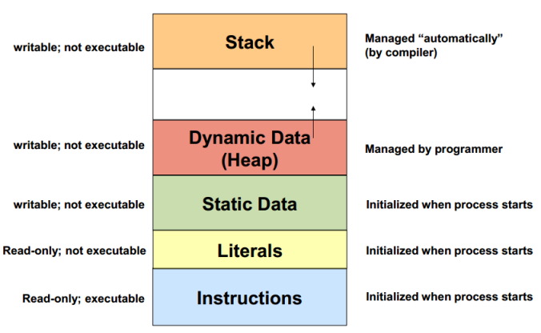
Lexer
- The code for the lexer is in
lib/Lexerandinclude/nanocc/Lexerdirectories. - The lexer is implemeted in pure C without any dependencies (in
lib/Lexer/CAPI), with a C++ interface (lib/Lexer/Lexer.cpp) so other parts of the compiler can use it.
Understanding Lexer Code
include
└── nanocc
├── Lexer
└── Lexer.hpp // C++ interface for the lexer
lib
├── Lexer
│ ├── CAPI
│ │ ├── lexer.c # C implementation of the lexer # array of pair of enums and custom regex functions to match tokens
│ │ ├── lexer.h # C header for the lexer
│ │ ├── lexer_internal.h # some helper functions and custom impl of `vector` in C
│ │ ├── regex.c # regex engine implementation in C
│ │ ├── regex.h # regex engine header
│ │ └── tokens.def # token_enum, string
│ └── Lexer.cpp
- See this (Writing a Lexer in Pure C) to understand the Lexer part of the codebase and how it lexer works.
Extending Lexer for extern and static
-
Okay, so I need to add
externandstatickeywords to the lexer. -
In
lib/Lexer/CAPI/tokens.def, I will add the following lines:... X(EXTERN, "extern") X(STATIC, "static") ... -
This is used by
// lib/Lexer/CAPI/lexer.h typedef enum { #define X(name, str) name, #include "tokens.def" } CTokenType;and
// include/nanocc/Lexer/Lexer.hpp enum class TokenType { #define X(name, str) name, #include "../../../lib/Lexer/CAPI/tokens.def" #undef X };to get create enum of tokens for both C and C++ interfaces.
-
Now I need to add regex patterns for these tokens in
lib/Lexer/CAPI/lexer.c.# include "regex.h" CTokenSpec token_specs[] = {{INT, int_fsm}, {VOID, void_fsm}, {RETURN, return_fsm}, {IF, if_fsm}, {ELSE, else_fsm}, {QUESTION, question_fsm}, {COLON, colon_fsm}, {DO, do_fsm}, {WHILE, while_fsm}, {FOR, for_fsm}, {BREAK, break_fsm}, {CONTINUE, continue_fsm}, // Make sure to add them before the `IDENTIFIER` token, so that `extern` and `static` are not matched as identifiers (variable/function names) {EXTERN, extern_fsm}, {STATIC, static_fsm}, {TILDE, tilde_fsm}, {DECREMENT, decrement_fsm}, {NOT, not_fsm}, {MINUS, minus_fsm}, {PLUS, plus_fsm}, {STAR, star_fsm}, {SLASH, slash_fsm}, {PERCENT, percent_fsm}, {AND, and_fsm}, {OR, or_fsm}, {ASSIGN, assign_fsm}, {EQUAL, equal_fsm}, {NOT_EQUAL, not_equal_fsm}, {LESSTHAN, lessthan_fsm}, {GREATERTHAN, greaterthan_fsm}, {LESS_EQUAL, less_equal_fsm}, {GREATER_EQUAL, greater_equal_fsm}, {IDENTIFIER, identifier_fsm}, {CONSTANT, constant_fsm}, {LPAREN, lparen_fsm}, {RPAREN, rparen_fsm}, {LBRACE, lbrace_fsm}, {RBRACE, rbrace_fsm}, {SEMICOLON, semicolon_fsm}, {COMMA, comma_fsm}}; -
Now define the
extern_fsmandstatic_fsminlib/Lexer/CAPI/regex.hand implement them inlib/Lexer/CAPI/regex.c.// lib/Lexer/CAPI/regex.c /// @brief `std::regex("extern\\b")` | "\\b" is important since it shouldn't match "external" or something like that /// @param s /// @return 6 if matches else 0 int extern_fsm(const char* s) { if (s[0] != 'e' || s[1] != 'x' || s[2] != 't' || s[3] != 'e' || s[4] != 'r' || s[5] != 'n' || !_iswordbreaker(s[6])) { return 0; } // we only care about `extern` part, not about the wordbreaker now that we know it matches correctly return 6; // length of "extern" } /// @brief `std::regex("static\\b")` | "\\b" is important since it shouldn't match "statics" or something like that /// @param s /// @return 6 if matches else 0 int static_fsm(const char* s) { if (s[0] != 's' || s[1] != 't' || s[2] != 'a' || s[3] != 't' || s[4] != 'i' || s[5] != 'c' || !_iswordbreaker(s[6])) { return 0; } // we only care about `static` part, not about the wordbreaker now that we know it matches correctly return 6; // length of "static" }
Parser
- Parser takes the tokens from the lexer and creates an Abstract Syntax Tree (AST) from them.
- Abstract Syntax Tree: A Tree representation of the syntactic structure of the source code. Abstract here means that not every detail from the source code is represented in the tree, only the essential parts.
- The Parser also checks for syntax errors and reports them.
Understanding Parser Code
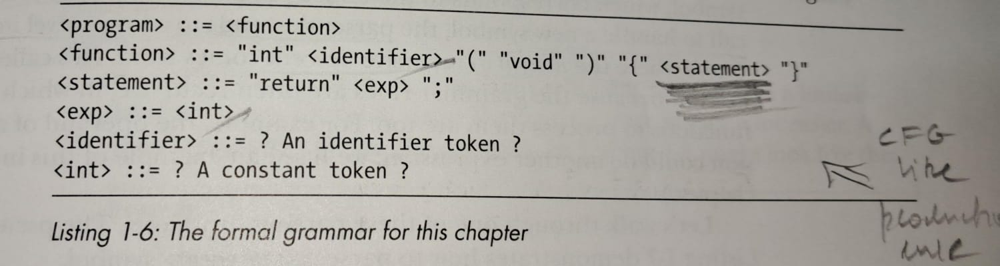
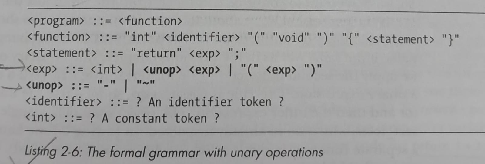
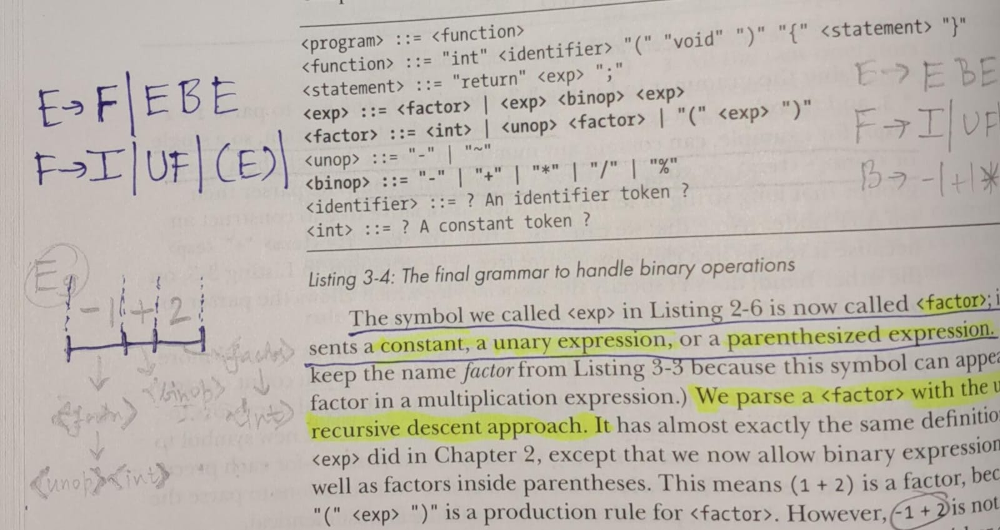
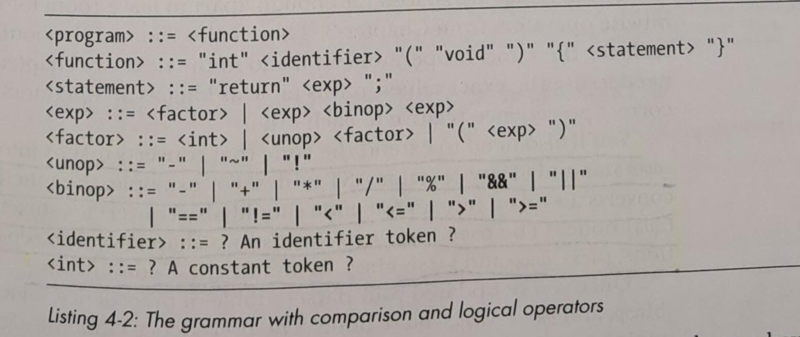
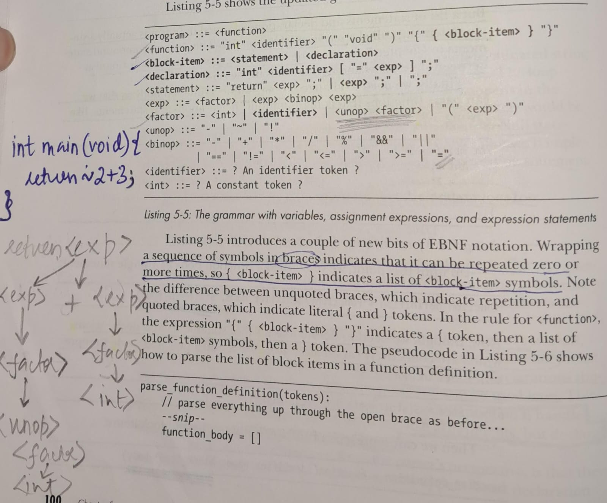
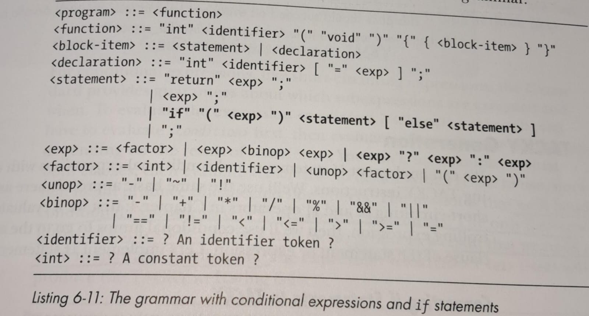
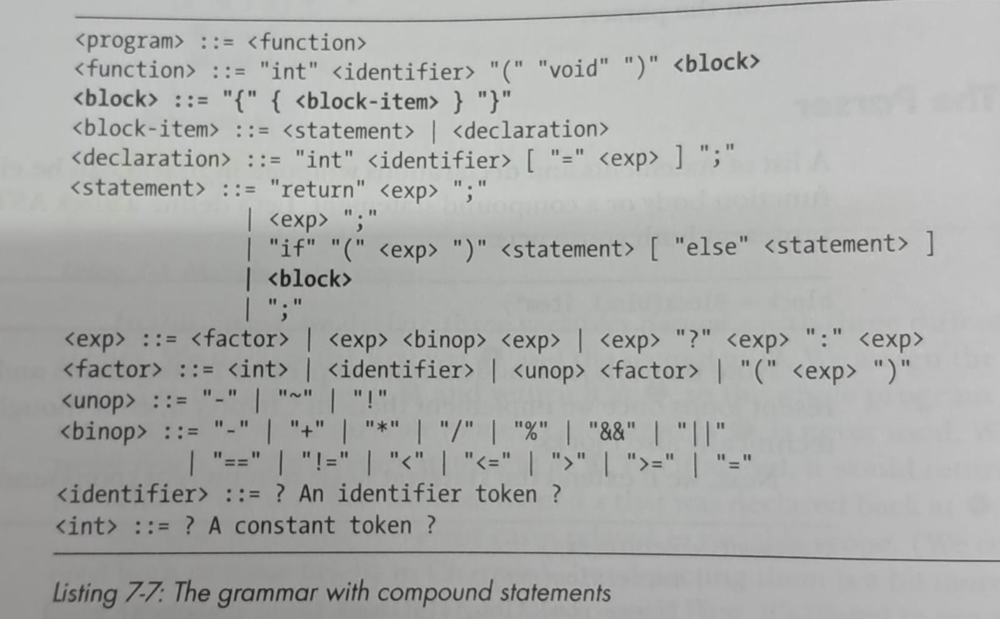
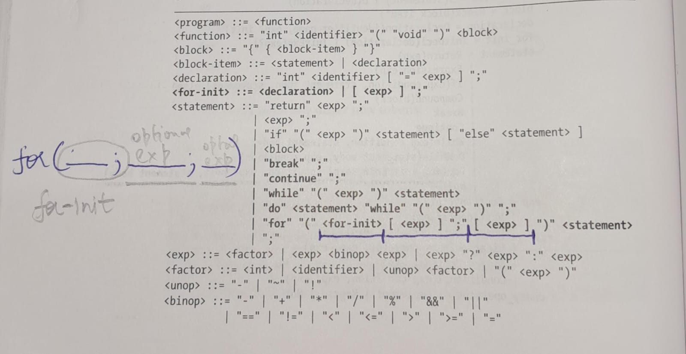
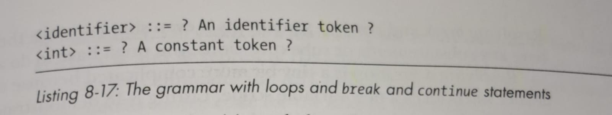
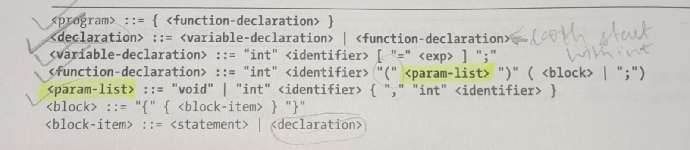
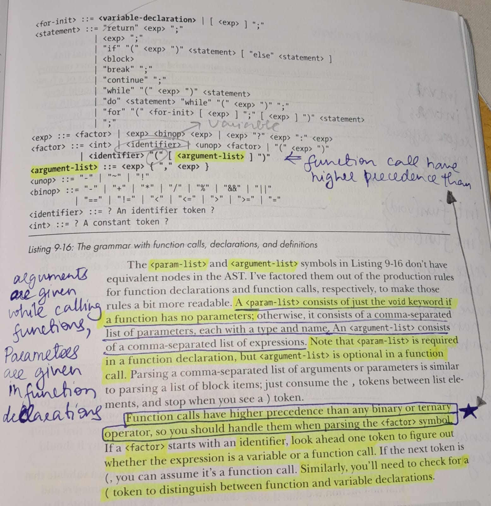
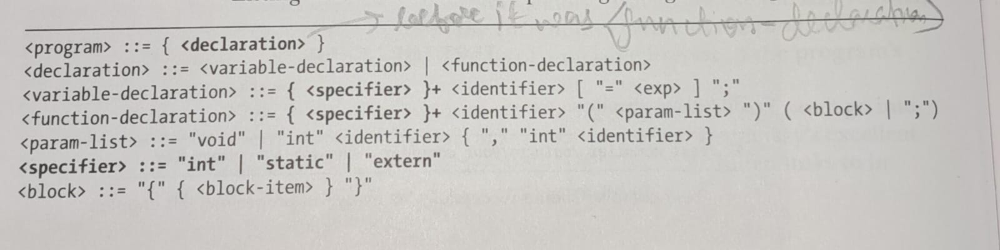
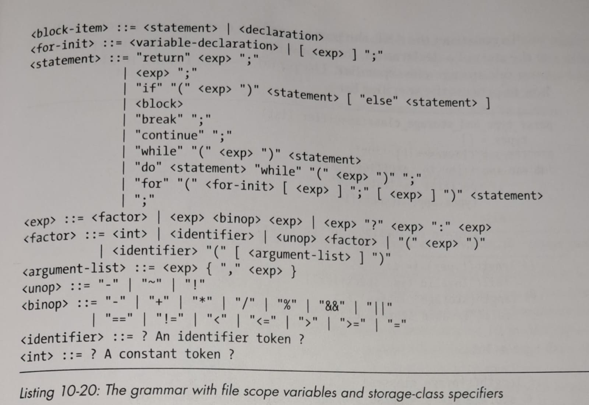